배관기능장 (2004-07-18 기출문제)
1과목: 임의구분
1. 밀폐식 팽창 탱크에 설치하지 않아도 되는 것은?
- 압력계
- 배기관
- 압축 공기관
- 안전 밸브
(정답률: 79%)

2. 압력탱크 급수방식의 특징을 설명한 것으로 올바른 것은?
- 건물의 구조를 강화시킬 필요가 있다.
- 고가 수조를 설치할 필요가 있다.
- 취급이 쉽고 고장이 적어 대규모 건축에 적합하다.
- 유효사용수량이 적을 때, 수량의 변화가 압력에 영향을 준다.
(정답률: 55%)
3. 옥상탱크식 급수설비로 3층에 급수하는 경우 수도본관에 서 3층 수전의 수전까지 높이가 10m라면 수도본관에서 옥상 탱크까지의 최소 높이는 얼마가 되어야 하는가? (단, 수전의 최소압력이 0.3kg/cm2, 옥상탱크까지 배관의 마찰손실수두가 0.2kg/cm2으로 가정한다.)
- 11 m
- 15 m
- 20 m
- 26 m
(정답률: 72%)
4. 배수관에 트랩을 설치하는 가장 주된 이유는?
- 배수의 역류를 막기 위함이다.
- 유해 가스의 역류 방지하기 위함이다.
- 증기와 물의 혼합을 막기 위함이다.
- 배수를 원활히 하기 위함이다.
(정답률: 86%)
5. 배수 배관에서 청소구 설치장소를 나타내었다. 잘못된 것은?
- 배수관이 45° 이상의 각도로 방향을 전환하는 곳
- 배수 수평 주관과 배수 수평 분기관의 분기점
- 배수 수직관의 제일 위부분 또는 그 근처
- 길이가 긴 수평 배수관 중간 (관경이 100A이하일 때 15m 마다, 100A 이상일 때에는 30m 마다)
(정답률: 64%)
6. 인접 건물에서 화재가 발생했을 때 인화를 방지하기 위해 창문, 출입구, 처마 끝에 노즐을 설치한 것은?
- 스프링클러
- 드렌처
- 소화전
- 방화전
(정답률: 97%)
7. 제조 공정에서 정제된 가스를 저장하여 가스의 압력을 균일하게 유지하면서 제조량과 수요량을 조절하는 것은?
- 정압기(governor)
- 가스 홀더(gas holder)
- 분리기(separator)
- 송급기(feeder)
(정답률: 68%)
8. 다음 집진장치 중 일반적으로 가장 효율이 좋은 것은?
- 중력 분리식 집진장치
- 여과식 집진장치
- 원심력 분리식 집진장치
- 전기 집진장치
(정답률: 95%)
9. 배기 가스의 여열을 이용하여 급수를 가열하는 보일러부속 장치는?
- 증기 예열기
- 공기 예열기
- 재열기(reheater)
- 절탄기(economizer)
(정답률: 80%)
10. 목표값이 시간의 변화, 외부조건의 영향을 받지않고 일정한 값으로 제어되는 방식으로 보일러, 냉난방장치의 압력제어, 급수탱크의 액면제어 등에 사용되는 제어는?
- 추치 제어
- 정치 제어
- 프로세스 제어
- 비율 제어
(정답률: 87%)
11. 가스홀더에서 직접 홀더압을 이용해서 공급하는 가스공급방법으로 대구경관이 필요하며 비용도 상승하게되어 공급범위가 한정된 가스공급방식인 것은?
- 중압 공급방식
- 고압 공급방식
- 혼합 공급방식
- 저압 공급방식
(정답률: 74%)
12. 압력계 배관시공시 유체에 맥동이 있는 경우에 다음 중 어느 것을 설치하여 압력계에 맥동이 전파되지 않게 하는가?
- 사이폰관
- 펠세이숀 댐퍼
- 시일포드
- 벨로우즈
(정답률: 77%)
13. 기계적(물리적) 세정방법에 대한 설명 중 틀린 것은?
- 물 분사기(water jet)세정법 : 고압펌프를 설치 압송하는 제트차를 사용해 고압의 가스 상태로 분사하여 스케일을 제거하는 방법
- 피그(pig)세정법 : 탑조류, 열교환기, 가열로,보일러 배관에 사용하는 방법으로 세정액을 순환시켜 세정하는 방법
- 샌드 블라스트(sand blast)세정법 : 공기압송장치 등으로 모래를 분사하여 스케일을 제거하는 방법
- 숏 블라스트(shot blast)세정법 : 공기압송장치 등으로 강구(steel ball)를 분사하여 스케일을 제거하는 방법
(정답률: 84%)
14. 일반적인 급· 배수배관 라인의 시험방법 설명으로 잘못된 것은?
- 수압시험 : 1차시험방법으로 많이 쓰이며 관 접합부의 누수 및 수압에 견디는지 여부를 조사한다.
- 기압시험 : 물 대신 암모니아가스를 관속에 압입하여 이음매에서 가스가 새는 것을 후각으로 조사한다.
- 만수시험 : 물을 배관계의 최고부에서 규정 높이만큼 만수시켜 일정시간 경과 후 누수 여부를 확인한다.
- 연기시험 : 위생기구 설치 후 각 트랩에 봉수한 후 전계통에 자극성 연기를 통과시켜 연기의 누기여부를 확인한다.
(정답률: 85%)
15. 자동제어에 있어서 미리 정해 놓은 시간적 순서에 따라서 작업을 순차적으로 진행하는 제어방법은?
- 시퀀스 제어(sequence control)
- 피드백 제어(feed back control)
- 폐루프 제어(closed loop control)
- 궤환 제어
(정답률: 97%)
16. 구조상 유체의 흐름방향과 평행하게 밸브가 개폐되는 것으로 유량 조절에 다음 중 가장 적합한 밸브는?
- 글로브 밸브
- 체크밸브
- 슬루스 밸브
- 플러그 밸브
(정답률: 74%)
17. 다음 보온재 중 액체, 기체의 침투를 방지하는 작용이 있는 유기질 보온재는?
- 석면
- 규조토
- 코르크(cork)
- 암면
(정답률: 75%)
18. 다음 합성 수지 도료에 관한 설명 중 틀린 것은?
- 프탈산계 : 상온에서 건조하며, 방식도료로 쓰인다.
- 요소멜라민계 : 열처리 도료로서 내열성, 내수성이 좋다
- 염화비닐계 : 상온에서 건조하며,내약품성,내유성이 우수하여,금속의 방식도료로 적합하다.
- 글래스울계 : 도막이 부드럽고 녹방지에는 완벽하지 않으나, 값이 싼 장점이 있다.
(정답률: 74%)
19. 관의 내외에서 열교환을 목적으로 하는 장소에 사용되는 보일러 열교환기용 합금강 강관의 KS 재료 기호는?
- STH
- STHA
- SPA
- STS × TB
(정답률: 80%)
20. 주철관 중 일명 구상 흑연 주철관 이라고 하는 것은?
- 수도용 입형 주철관
- 수도용 원심력 금형 주철관
- 수도용 원심력 사형 주철관
- 수도용 원심력 덕타일 주철관
(정답률: 91%)
2과목: 임의구분
21. 폴리 부틸렌관에 관한 설명으로 올바른 것은?
- 일명 엑셀 온돌 파이프라고도 한다.
- 곡율 반경을 관경의 2배까지 굽힐 수 있다.
- 일반적인 관보다 작업성이 우수하나 결빙에 의한 파손이 많다.
- 관을 연결구에 삽입하여 그라프링과 0링에 의한 접합을 할 수 있다.
(정답률: 57%)
22. 프리스트레스 콘크리트관의 설명으로 올바른 것은?
- 일반적으로 에터니트관이라고 부르며 고압으로 가압하여 성형한 것이다.
- 보통 흄관이라 하며 철근을 형틀에 넣고 원심력으로 성형한 것이다.
- PS강선으로 압축응력을 부과하여 인장응력과 상쇄할 수 있게 한 것이다.
- 내측은 흄관, 외측은 에터니트관으로 이중으로 만든 특수관이다.
(정답률: 75%)
23. 스테인레스 강관의 이음쇠 중 동합금제 링을 캡너트로 죄어서 고정시켜 결합하는 이음쇠는?
- MR 조인트 이음쇠
- 몰코 조인트 이음쇠
- 랩 조인트 이음쇠
- 팩레스 조인트 이음쇠
(정답률: 89%)
24. 연단에 아마유를 배합한 것으로 밀착력이 강하고 막이 굳어서 풍화에 대하여도 강하므로, 다른 착색도료의 밑칠용으로 사용하기에 가장 적합한 것은?
- 산화철 도료
- 알루미늄 도료
- 합성수지 도료
- 광명단 도료
(정답률: 91%)
25. 다음 패킹에 대한 설명 중 틀린 것은?
- 일산화연은 냉매배관에 사용하는 나사용 패킹이다.
- 석면 야안 패킹은 소형의 그랜드 패킹에 사용한다.
- 테프론 패킹은 천연고무와 성질이 비슷한 합성고무 패킹이다.
- 화학약품에 강하고 내유성이 크서 기름 및 약품배관에 사용한다.
(정답률: 62%)
26. 관지름 20 mm, 배관 연장길이 19 m, 압력 탱크에서 높이가 10 m인 3층 주방 싱크대에 급수배관을 할 경우 압력탱크의 최저수압은 약 몇 kgf/cm2 인가? (단, 총 마찰 손실수두는 5 mAq, 주방 싱크에서의 최저수압은 0.3 kgf/cm2임)
- 1.8
- 2.5
- 3.2
- 3.7
(정답률: 53%)
27. 보기 그림과 같은 배관에서 단면 지름이 각각 DⅠ= 50cm, DⅡ=30cm 이고 Ⅰ부분의 유속이 4m/s이면 Ⅱ부분의 유량은 몇 m3/s 인가?
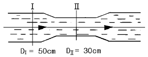
- 0.785
- 1.067
- 1.785
- 0.15
(정답률: 41%)
28. 강관 열간 구부림 가공에 대한 설명이다. 틀린 것은?
- 곡율 반경이 작은 경우에 열간 작업을 한다.
- 강관의 경우 800∼900 ℃로 가열한다.
- 구부림 작업 전에 모래를 채우고 적당한 온도까지 가열한 다음 구부린다.
- 가열하여 가공할 때 곡률 반지름은 일반적으로 관지름의 2 배 이하로 한다.
(정답률: 72%)
29. 일반적인 폴리에틸렌관의 이음방법인 것은?
- 인서트 이음
- 콤포이음
- 테이퍼 코어이음
- 소켓이음
(정답률: 74%)
30. 정과 해머로 재료에 홈을 따 내려고 할 때 해머의 안전수칙 설명으로 틀린 것은?
- 손을 보호하기 위하여 장갑을 낀다.
- 인접 작업자에게 파편이 날지 않도록 칸막이를 한다.
- 해머를 끼운 부분의 자루에 쐐기를 한다.
- 해머 끝부분의 변형을 그라인딩하여 사용한다.
(정답률: 77%)
31. 배관용 공기기구 사용시 안전수칙 중 틀린 것은?
- 처음에는 천천히 열고 일시에 전부 열지 않는다.
- 기구 등의 반동으로 인한 재해에 항상 대비한다.
- 공기 기구를 사용할 때는 방진 안경을 사용한다.
- 활동부에는 항상 기름 또는 그리스가 없도록 깨끗이 닦아 준다.
(정답률: 92%)
32. 주철관의 타이톤 이음(tyton joint)에 관한 설명 중 틀린 것은?
- 이음에 필요한 부품은 고무링 하나뿐이다.
- 매설할 경우 특수공구가 작업할 공간으로 이음부를 넓게 팔 필요가 있다.
- 비가 올 때 나 물기가 있는 곳에서도 이음이 가능하다.
- 이음 과정이 간단하며 관 부설을 신속히 할 수 있다.
(정답률: 79%)
33. 다음 동관용 공구 중에 동관의 끝부분을 진원으로 교정하는 공구는?
- 플레어링 툴 세트(flaring tool set)
- 파이프 리머(reamer)
- 사이징 툴(sizing tool)
- 익스팬더(expander)
(정답률: 90%)
34. 강관 접합에서 슬리이브 용접 접합시 슬리이브의 길이는 파이프 지름의 몇 배 정도가 가장 적합한가?
- 0.5 ∼ 1 배
- 1.2 ∼ 1.7 배
- 2.0 ∼ 2.5 배
- 2.5 ∼ 3.2 배
(정답률: 93%)
35. 주철 파이프 접합시 녹은 납이 비산하여 몸에 화상을 입히는 주원인은?
- 접합부에 수분이 있기 때문에
- 녹은납의 온도가 낮기 때문에
- 녹은납의 온도가 높기 때문에
- 인납 성분에 Pb함량이 너무 많기 때문에
(정답률: 95%)
36. 강관을 절단작업시 사용되는 산소, 아세틸렌 가스 용접기에 사용하는 산소 용기의 규정 표시 색은?
- 흰색
- 녹색
- 회색
- 청색
(정답률: 88%)
37. 가스용접용 산소 병에서 압력 5㎏/cm2 의 산소가스 온도가 0℃에서 70℃로 상승했을 때 압력은 약 몇 ㎏/cm2인가?
- 4.2
- 5.5
- 6.0
- 6.3
(정답률: 44%)
38. 100A 강관으로 반지름이 R = 800mm의 6편 마이터(miter) 배관을 제작하고자 한다. 절단각은 얼마인가?
- 7.5°
- 9°
- 15°
- 22.5°
(정답률: 72%)
39. 용접 케이블 결선시 모재를 양극(+)에, 용접봉을 음극 (-)에 연결하는 직류 아크용접의 극성은?
- 정극성
- 역극성
- 단극성
- 양극성
(정답률: 74%)
40. 용접 후 용접변형을 교정하는 방법에 속하지 않는 것은?
- 역변형법
- 롤러에 거는 방법
- 박판에 대한 점 수축법
- 가열 후 해머링하는 방법
(정답률: 73%)
3과목: 임의구분
41. 용접 작업시 적합한 용접지그(JIG)를 사용할 때 얻을 수 있는 효과가 아닌 것은?
- 용접 작업을 용이하게 한다.
- 작업 능률이 향상된다.
- 용접 변형을 억제한다.
- 잔류 응력이 제거된다.
(정답률: 95%)
42. 15kgf/cm2 30ℓ 용기내에 아세틸렌 가스가 4500ℓ 충전되어 있다면, 300번 팁을 사용하면 몇시간 사용할수 있는가? (단, 표준불꽃으로 용접한다.)
- 10시간
- 12시간
- 15시간
- 17시간
(정답률: 59%)
43. 접합하려는 2개의 부재 중 한쪽의 부재에 둥근 구멍을 뚫고 뚫은 구멍을 용접하여 두 부재를 이음하는 것은?
- 플러그 용접
- 심 용접
- 플레어 용접
- 점 용접
(정답률: 72%)
44. 자동 금속 아크용접법으로 모재 이음 표면에 미세한 입상 모양의 용제를 공급하고, 용제속에 연속적으로 전극 와이어를 송급하여 모재 및 전극 와이어를 용융시켜 용접부를 대기로부터 보호하면서 용접하는 방법인 것은?
- 일렉트로 슬래그용접
- 불활성가스용접
- 이산화탄소 아크용접
- 서브머지드 아크용접
(정답률: 72%)
45. 배관설비의 부분 조립도을 의미하는 영문 표기인 것은?
- U.F.D.
- plot plan
- P.I.D.
- spool drawing
(정답률: 77%)
46. 배관 도면에서의 약어 표시에 관한 설명으로 틀린 것은?
- 배관의 높이를 관의 중심을 기준으로 할 때는 BOP로 표시한다.
- 1층의 바닥면을 기준으로 한 높이로 표시한 약어는 FL이다.
- 배관의 높이를 윗면을 기준으로 하여 표시할 때의 약어는 TOP이다.
- 포장된 지표면을 기준으로 하여 배관설비의 높이를 표시할 때의 약어는 GL 이다.
(정답률: 79%)
47. 보기와 같은 배관지지 도시 기호로 의미로 가장 적합한 것은?
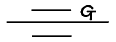
- 스프링 지지
- 행거
- 앵커
- 가이드
(정답률: 86%)
48. 다음 중 공기조화 배관설비에서의 풍량조절 댐퍼로 가장 적합한 기호은?
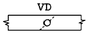
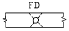
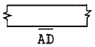
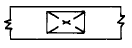
(정답률: 74%)
49. 배관설비와 관련된 계장도시기호 중 잘못 설명된 것은?
- A - 경보
- M - 기타 변량
- F - 유량
- D - 밀도
(정답률: 69%)
50. 관의 말단부의 표시방법에서 폐지 플랜지 도시기호인 것은?
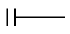
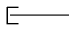
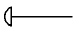
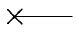
(정답률: 78%)
51. 파이프 표면에 연한 노랑색이 칠해져 있는 경우 파이프 내의 물질의 종류는?
- 기름
- 증기
- 전기
- 가스
(정답률: 79%)
52. 보기와 같은 라인인덱스(line index)의 기재순서와 기호를 설명으로 올바른 것은?
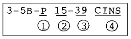
- ①은 유체기호을 나타낸다.
- ②는 장치번호를 나타낸다.
- ③은 배관길이를 나타낸다.
- ④는 장치명칭를 나타낸다.
(정답률: 66%)
53. 보기 용접도시기호에서 n 의 숫자가 의미하는 것은?
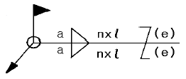
- 용접 목두께
- 용접부 길이(크레이트 제외)
- 용접부의 개수(용접 수)
- 인접한 용접부 간의 간격(피치)
(정답률: 79%)
54. 보기 등각도는 관 "A"가 아래쪽으로 비스듬히 내려가 있는 B과 접합되어 있는 경우 올바르게 된 정투영도는? (단, 화면에서 직각 이외의 각도로 배관된 경우이다.)
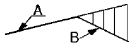
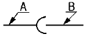
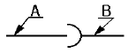
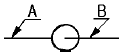
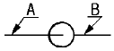
(정답률: 63%)
55. 미리 정해진 일정 단위중에 포함된 부적합(결점)수에 의거 공정을 관리할 때 사용하는 관리도는?
- p관리도
- nP관리도
- c관리도
- u관리도
(정답률: 72%)
56. 도수분포표에서 도수가 최대인 곳의 대표치를 말하는 것은?
- 중위수
- 비 대칭도
- 모우드(mode)
- 첨도
(정답률: 76%)
57. 로트수가 10 이고 준비작업시간이 20분이며 로트별 정미작업시간이 60분이라면 1로트당 작업시간은?
- 90분
- 62분
- 26분
- 13분
(정답률: 54%)
58. 더미활동(dummy activity)에 대한 설명중 가장 적합한 것은?
- 가장 긴 작업시간이 예상되는 공정을 말한다.
- 공정의 시작에서 그 단계에 이르는 공정별 소요시간들중 가장 큰 값이다.
- 실제활동은 아니며, 활동의 선행조건을 네트워크에 명확히 표현하기 위한 활동이다.
- 각 활동별 소요시간이 베타분포를 따른다고 가정할때의 활동이다.
(정답률: 64%)
59. 단순지수평활법을 이용하여 금월의 수요를 예측할려고 한다면 이때 필요한 자료는 무엇인가?
- 일정기간의 평균값, 가중값, 지수평활계수
- 추세선, 최소자승법, 매개변수
- 전월의 예측치와 실제치, 지수평활계수
- 추세변동, 순환변동, 우연변동
(정답률: 67%)
60. 다음 중 검사항목에 의한 분류가 아닌 것은?
- 자주검사
- 수량검사
- 중량검사
- 성능검사
(정답률: 74%)